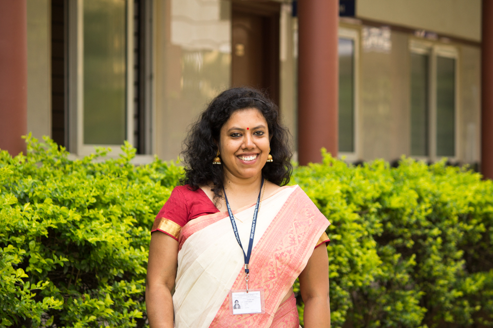
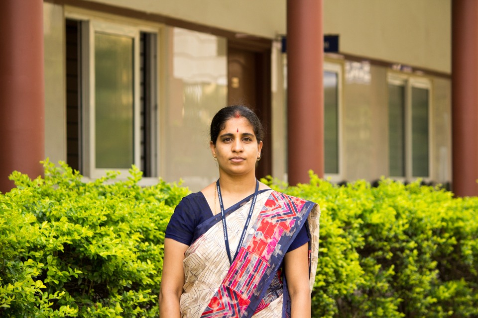
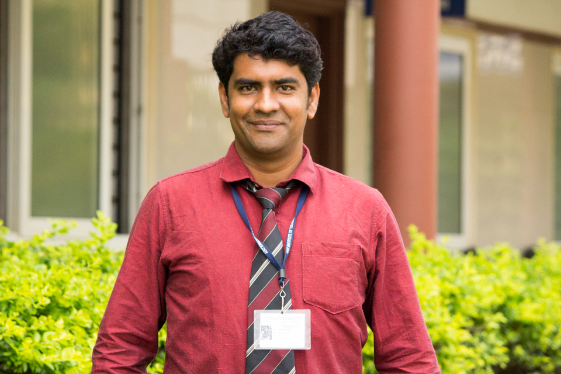
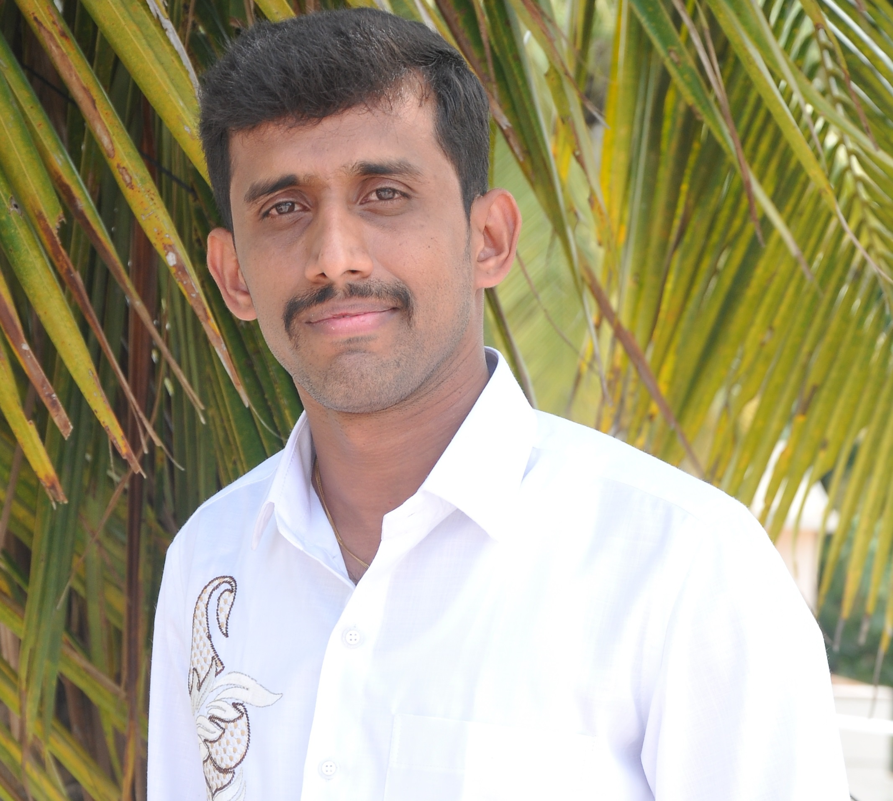
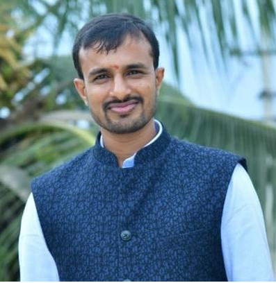
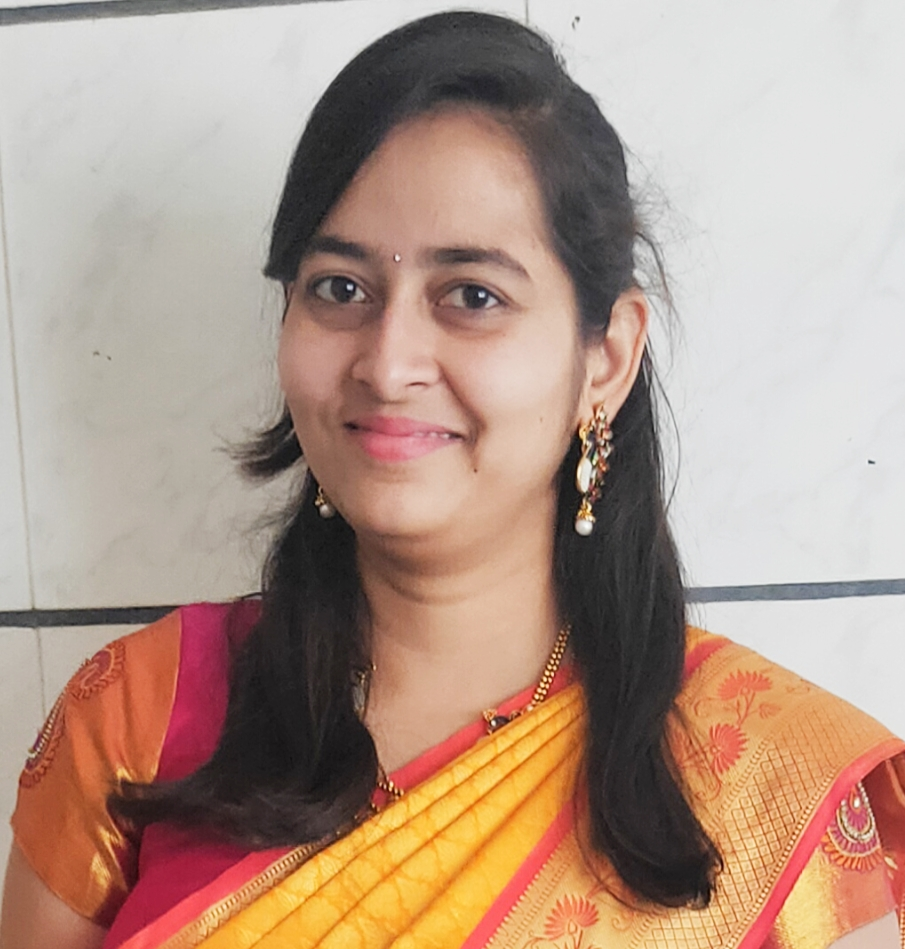
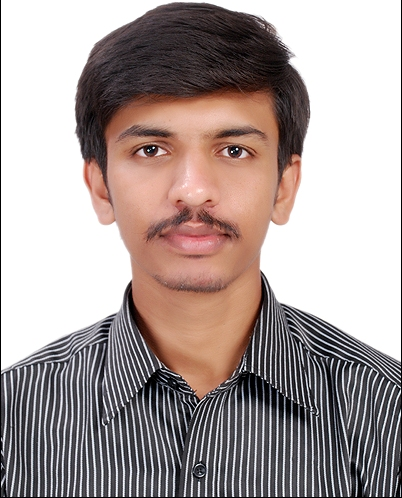
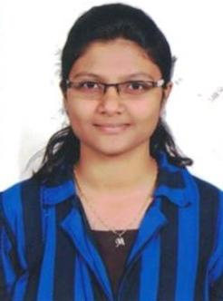
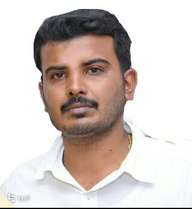
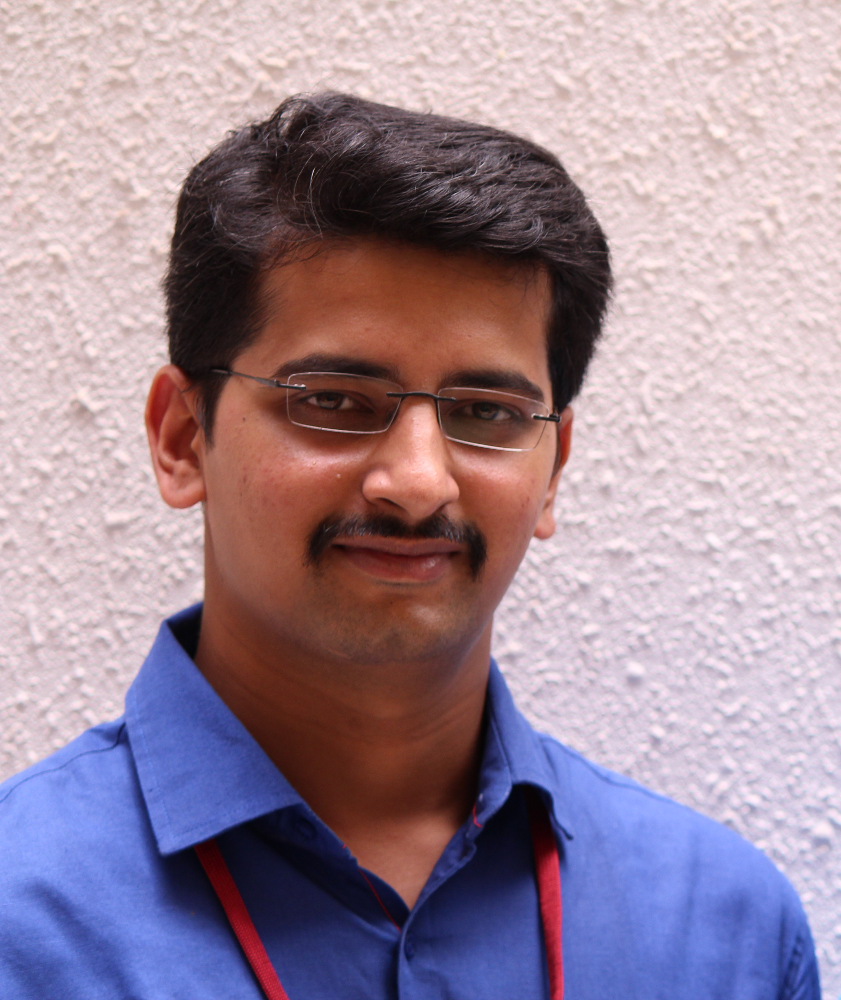

CIVIL ENGINEERING

The Department of Civil Engineering is proud to offer Bachelor of Engineering course in Civil Engineering under VTU from 2014-15 with an initial instake of 60 students, under the guidance of the great visionary in Civil Engingeering constructions, Dr. R N Shetty.
Civil Engineering Department of RNS Institute of Technology, Bangalore, aims to be a centre of excellence in technical education and innovative applications, providing excellent professionals with integrity, besides being useful to all the stakeholders.
The department aims to be the best-rated department in college and in the university disseminating globally acceptable education, effective industrial consultancy and relevant research output.
The objectives are as follows:
- Provide high quality civil engineering education to the graduate program to cope up with national / international standards
- Prepare graduates for professionals career and doctoral research
- Be a leading consultancy provider for the development of the society
- Promote excellence in teaching and research
Vision
Shaping Excellent Civil Engineering Professionals with Societal FocusMission
- To emphasize understanding of basic Engineering Concepts.
- To develop creative ability to analyze and manage industry challenges.
- To establish synergy between teaching and research.
Laboratory


Civil Engineering Department Video
AAROHANA SHORT VIDEO
-
location_cityFACILITIES AND INFRASTRUCTURE
- Adequate number of rooms and laboratory for lectures (core/electives), seminars, tutorials with proper teaching aids, multimedia projectors etc for the program.
- Faculty Rooms in the Department with internet facility.
- Well equipped laboratory facilities to cater needs of university curriculum and research/consultancy work.
- Well equipped laboratory facilities to cater needs of university curriculum and research/consultancy work.
- Licensed Software and internet of 75 mbps dedicated line with Wi-Max connectivity
- Exclusive computer lab containing 30 upgraded systems to cater student's needs.
- Departmental library with 120 Titles and books, 30+ Project reports, e-Journals.
- Faculty to Student ratio of 1:17.
- Faculties are pursuing PhD and published more than 45+ papers in the last three years.
- Faculty involvement in conducting Conferences, Seminars, Workshops and Technical talks.
-
thumb_upEXCELLENCE / ACHIEVEMENTS
- Fourth Semester BE(CIVIL) students of the Department of Civil Engineering participated actively in RADIANCE-the in house Project exhibition conducted by Department of Mechanical Engineering and won 3rd Prize for their project work held during March 2016 .
- IV SEMESTER BE (CIVIL) Vinay R (1RN14CV054, Roopesh (1RN15CV406), Dhananjaya (1RN14CV040, Shubham Anand (1RN14CV050) won FIRST PRIZE (A CASH AWARD of Rs.10000/-, A Memento and a Certificate) for their Project entitled “PORTATABLE LIGHT WEIGHT HYDRAULIC JACK” exhibited at SHRISTI 2016 (Innovation Exchange) held at CMR Institute of Technology, Bengaluru during 6-8th May 2016 under the auspices of ABVP, KARNATAKA
- AAROHANA 2K18 was conducted on 6th APRIL 2018 as an INTER COLLEGE TECHNICAL AND CULTURAL EVENT. Many Colleges from Bengaluru participated in the event which was a grand success. The entire event, starting from sponsorship to conduction and comparing of events was handled by 2014 and 2015 batch of BE(CIVIL) students which was well received and appreciated by all. Many Sports Competitions were also held during the event.
- An Inter College Project Exhibition CIVILLOID 2018 conducted on 05-10-2018 at Department of Civil Engineering, RNSIT. 71 Groups totaling 221 Students from various colleges in Bengaluru participated and won many prizes. THREE students of RNSIT won 2nd Prize in CIVILLOID 2018.
- RAMCO CEMENTS “TALENT HUNT COMPETITION”- an inter College Quiz Competition was conducted at ACHARYA Institute of Technology, Bengaluru on 15th September 2018. THREE students of Civil Engg Department Participated in “TALENT HUNT COMPETITION held at Acharya It, Bengaluru on 15th September 2018 and won FIRST PRIZE and a Memento with a Total Cash Prize of Rs.7500/-.
- SAGAR D and SURYA KIRAN of VII SEMESTER BE(CIVIL) have participated in SRULANOTASAVA 2019 at Acharya IT, Bengaluru and won 3rd PRIZE in TECHNICAL QUIZ on 23rd SEPTEMBER 2019.
- V SEMESTER STUDENTS organized Sports and Cultural Events to welcome III SEMESTER Students on 25th September 2019 and conducted various events and won many prizes.
-
peopleWORKSHOPS / CONFERENCES CONDUCTED
- The department organized a TECHNICAL LECTURE on 27th February 2016 for the benefit of IV SEM BE (CIVIL) Students. The technical talk was delivered by Prof. M E RAGHUNANDAN PhD, C Eng, Senior Lecturer, School of Engineering, Monash University, Malaysia on the topic FLOW THROUGH PALM OIL CONTAMINATED SOILS - AN OVERVIEW.
- The Department organized TECHNICAL TALK under the auspices of ACET on 23rd April 2016. The technical Talk was delivered by Saibaba Ankala, ME, IRSE, FIE, Chief Engineer, Indian Railways, Guwahati on the topic "Global Trends in Sustainable Design and Construction of Long Span Bridges".
- The Department celebrated ENGINEER’S DAY on 23rd September 2016. On the day, an EXTENSION LECTURE on the topic “Hazardous Waste Management” for the benefit of Civil Engineering students of RNSIT, Bengaluru, was delivered by Mr. Raghuram P T, Senior Scientific Officer, Dept. of Chemical Engineering, IISc, Bengaluru, and Dr. Suneetha T B, Associate Professor Dept. of Biotechnology, Acharya Institute of Technology, Bengaluru.
- The Department is organized a training programme on “Cement Manufacturing Process” for III &V SEMESTER BE (CIVIL) Students on 22ND OCTOBER 2016 between. The training programme was conducted by Industry Professionals- Heidelberg Cement India Limited, Bengaluru.
- The department organized a TECHNICAL LECTURE on 27th February 2016 for the benefit of IV SEM BE (CIVIL) Students. The technical talk was delivered by Prof. M E RAGHUNANDAN PhD, C Eng, Senior Lecturer, School of Engineering, Monash University, Malaysia on the topic FLOW THROUGH PALM OIL CONTAMINATED SOILS - AN OVERVIEW.
- The Department organized ONE DAY CORPORATE SOCIAL RESPONSIBILTY PROGRAMME on 31/03/2017. In this regard we have arranged an expert lecture on FIRE FIGHTING with a DEMINAR by Personnel from FIRE FIGHTING DEPARTMENT, Banashankari, and Bengaluru at 10AM. On the day, DONATIONS amounting to Rs. 7800/- in cash and stationary articles and clothes were handed over to the members of the SAMARTHANAM TRUST, Bengaluru.
- The Students of II, IV and VI SEM BE (CIVIL) exhibited their projects in PROJECT EXIHIBITION-CIVILLOID 2017 held on 13/04/2017 in the NEW CIVIL BLOCK. The project competition was held prizes were distributed by Dr W P Prem Kumar, Senior Professor, Global Academy of Technology, Bengaluru.
- The Department celebrated ENGINEER’S DAY on 22nd September 2017. On the day, an EXTENSION LECTURE on the topic “Civil Engineering Concrete and Material Testing” for the benefit of Civil Engineering students of RNSIT, Bengaluru, was delivered by Dr R Nagendra Senior Director STEDRANT TECHNOCLINIC Pvt. Ltd., Bengaluru.
- EDS Technologies Industry oriented Training in Software application using REVIT were provided for Students of VII and V Sem BE (CIVIL) Students on REVIT –A Structural Engg. software-which prepares students for Industry ready.
- Mr. Madhusudhana Y B and Mr. M Dharmesh N, Assistant Professor Conducted TWO DAY workshop on PRIMAVERA AND QGIS in SOFTWARE APPLICATION LAB on 16-17th March 2018 with 28 Faculty from Colleges in Bengaluru attending the same.
- Inauguration of Indian Geotechnical Society Student Chapter at RNSIT on 27th April 2018 with a Technical Lecture on Sustainable Practices in Ground Improvement Techniques.
- 13 Girl students of VII Semester BE (CIVIL) attended AICTE Sponsored WeCon Conclave at JAIN UNIVERSITY, Kanakapura on 3-4th September 2018.
- Technical Lecture on “Pollution Control -A view by Sir MV” during ENGINEER’S DAY Celebration on 24-09-2018 by Sri. D R Kumaraswamy, Chief Environmental Officer,Karnataka State Pollution Control Board, Bengaluru-560098
- Conducted Social Responsibility Programme during inauguration of IGS STUDENT CHAPTER-RNSIT on 27th APRIL 2018.in the form of Lecture by Dr. Padmini Prasad Consultant Obstetrician &Gynaecologist Bengaluru on ‘SEXUAL EDUCTION TO ADOLESCENTS’
- The Department organized ONE DAY WORKSHOP on on “Interoperability on Structural and Architectural Elements Using AECOSim” on 4th May 2019.
- Dr. MT Prathap Kumar attended ASCE International Conference GEOCONGRESS 2019 held at Philadelphia, USA on 27-29 March2019.
- Dr. MT Prathap Kumar on an INVITATION from ROWAN UNIVERSITY, New Jersey, visited the University, interacted with Faculty of Civil Department and Delivered an expert lecture on 30th March 2019 for the benefit of UG and PG gradutes of the University. Explored the possibility of Collaboration with the Rowan University.
- Mr. Mahadeva M, Assistant Professor, organized 53 Indian Institute of Remote Sensing Program on “Geographical Information System” during the period from 23-10-2019 to 25-10-2019.
- Dr. M T Prathap Kumar and Mr. Mahadeva M, Assistant Professor, organized TWO DAY workshop on Analysis and Design of Tall Structures Using PROKON Software in Association with IIT New Delhi and GEEKS Lab Pvt. Ltd on 16-17th August 2019.
- Mr. Mahadeva M, Assistant Professor, conducted TECHNICAL VISIT to ISRO-RRSC South zone Bengaluru for the benefit of VII Sem BE(CIVIL) students on 09th July 2019.
- The DEPARTMENT conducted ENGINEER’S DAY on 25th SEPTEMBER 2019. During the day a Technical Talk by Mr, Sudharshan Iyengar, STRDERANT TECHNOVCLINIC, Bengaluru was delivered.
- The DEPARTMENT conducted a TECHNICAL TALK on “Global Trends in Sustainable Design of Long Span Bridges” which was delivered by Mr. Saibaba Ankola, Indian Railways for the benefit of 1st, 2nd and 3rd Year Students.
-
receiptsDEPARTMENT PEOs AND PSOs
-
monetization_onSPONSORED RESEARCH PROGRAM DETAILS
- Dr M T Prathap Kumar is the Principal Investigator for the VTU sponsored project performance of Model Footings Resting on Ply soil and Mat reinforced Soil under Static and Cyclic Loading. The project has been sanctioned by VTU Research Advancement Programme and commissioned from Feb. 2010 (Sanctioned Amount:Rs.8.20 Lakhs-2012-13)
-
pollDEPARTMENT NEWS LETTER
- To improve communication, team work and management skills, and the department encourages students to bring out annual magazine "UNNATHI" which showcases technical and non-technical skills of RNS civil students.
- Unnathi 2018
- Unnathi 2019
monetization_onR & D, PAPERS / BOOKS PUBLICATIONS - To improve communication, team work and management skills, and the department encourages students to bring out annual magazine "UNNATHI" which showcases technical and non-technical skills of RNS civil students.
Teaching Staff
-
Dr. Pratap Kumar M T
Professor/ HOD
-

Ms. Rumpa Sarkhel
Assistant Professor
-

Mr. Abhilash N R
Assistant Professor
-

Ms. Apoorva S
Assistant Professor
-

Mr. Shivakumar B Patil
Assistant Professor
-

Mr. Dharmesh N
Assistant Professor
-

Mr. Arjun P
Assistant Professor
-

Mr. Y B Madhusudhana
Assistant Professor
-

Mr. Mahadeva M
Assistant Professor
-

Mrs. Amulya T H M
Assistant Professor
-

Mr. Meghan Gowda
Assistant Professor
-

Mrs. Maheen R Gogeri
Assistant Professor
-

Mr. Ravikamar R
Assistant Professor
-

Mr. Sachin R Kulkarni
Assistant Professor
Technical / Non-Teaching Staff
| Name | Dr. Pratap Kumar M T |
| Designation | Professor & HoD Civil |
| Qualification | B.E (Civil Engineering), M.E (Geotechnical Engineering), Ph. D |
| Email id | drmtprathap@gmail.com; drmtprathap@rnsit.ac.in |
| Contact No. | 9741440958 / 9448587042 |
| Total Experience | Teaching:30 Years , Industry:1 Year |
| Experience in RNSIT | 4 Years |
| Research & Guidence | Guiding FOUR Research Scholars. TWO has been awarded |
| Areas of Interest | Soil Dynamics, Ground Improvement Techniques; Foundations; Concrete Technology |
| Projects (UG/PG) | "Guided KSCST Sponsored Projects for UG and PG students " |
| No. of Papers Published | National/International Conference:60; Peer Reviwed Journals:37 |
| No. of Books Published | 1. Theory of Structures-II 2. Earth & Earth Retaining Structures |
| FDPs/Conferences/Seminars/Talks | 19 |
| Research Grants | |
| Other Achievements |
| Name | Mr. Abhilash N R |
| abhilashchayapuri@gmail.com | |
| Designation | Assistant Professor |
| Qualification | B.E, M.E |
| Areas of interest | Water supply engineering, Waste water treatment management, Industrial waste water treatments |
| Projects | "Self Depuration Competence of Natuarl Stream" under K.S.C.S.T-41st Series, 2018 |
| Total Experience | 5 Years |
| Experience in RNSIT | 5 Years |
| Projects (UG/PG) | UG-06 |
| FDPs, Conferences, Seminars and Talks | 3 |
| Name | Mr. Arjun P |
| arjunp68@gmail.com | |
| Designation | Assistant Professor |
| Qualification | M.Tech |
| Areas of interest | Structural Engg., Earthquake Engg., Concrete Technology |
| Papers Published | 2 |
| FDPs, Conferences, Seminars and Talks | 4 |
| Total Experience | Teaching :4 Years, Industry : 2 Years |
| Experience in RNSIT | 3 Years |
| Name | Mr. Y B Madhusudhana |
| madhuyb8889@gmail.com | |
| Designation | Assistant Professor |
| Qualification | B.E, ME, Ph.D Persuing |
| Areas of interest | Structural Engg., Earthquake Engg., Geotechnical Engg. |
| Projects (UG/PG) | UG-10, PG-6 |
| FDPs, Conferences, Seminars and Talks | 5 |
| Papers Published | 5 |
| Total Experience | Teaching :6 Years Industry :1 Year |
| Experience in RNSIT | 3 Years |
| Name | Mrs. Amulya T H M |
| amulya.avvi@gmail.com | |
| Designation | Assistant Professor |
| Qualification | B.E, ME |
| Areas of interest | Water Resource Engg. |
| Projects (UG/PG) | UG-07 |
| FDPs, Conferences, Seminars and Talks | 18 |
| Papers Published | 6 International Journals |
| Total Experience | Teaching :6 Years |
| Experience in RNSIT | 2 Years |

| Name | Mr. Girish Kumar |
| Designation | Peon / Substaff |
| Qualification | Diploma |
| Total Experience | 1.8 Years |
| Experience in RNSIT | 1.8 Years |
| Name | Mr. Meghraj M |
| Designation | Peon / Substaff |

| Name | Mr.Ramesh Raj Urs N |
| Designation | Peon |
| Qualification | SSLC |
| Total Experience | 10 Years |
| Experience in RNSIT | 10 Years |